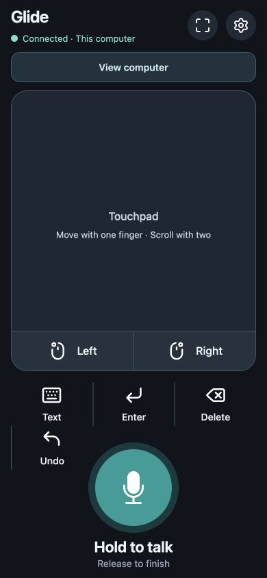
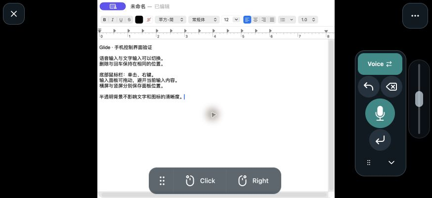

Install on your computer
Install Glide on Mac or Windows and enable the required system permissions.
Turn your phone into a trackpad, keyboard and wireless microphone. Bring your computer’s screen along with a tap.
For Mac and Windows · iPhone app not yet on the App Store


The current controls, with layouts for portrait and landscape.
On the sofa, in front of a presentation, or simply in a more comfortable position. Put your computer within reach of the phone you already hold.
Move the pointer, left-click, right-click and scroll using familiar phone gestures. Undo, Delete and Enter are always close at hand.
Phone gestures → computer actionsInstall Glide on Mac or Windows and enable the required system permissions.
Connect your phone and computer to the same local network. Cross-network access is not supported.
Scan the computer’s QR code in the phone app, or enter the pairing information manually.
Check the installation requirements, then choose the right desktop version.
Get Glide